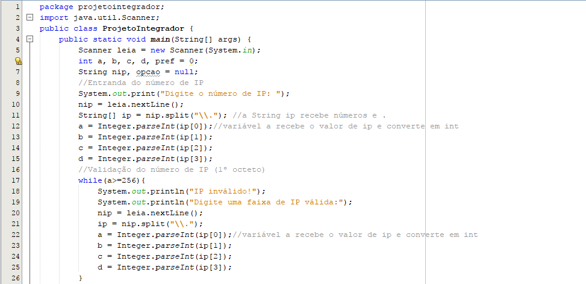
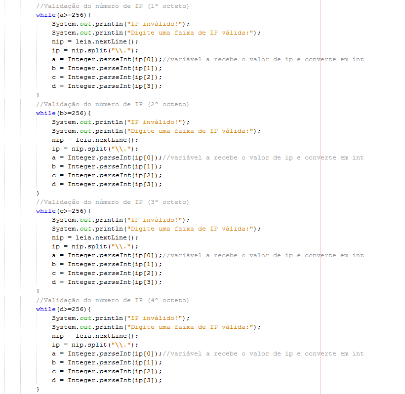
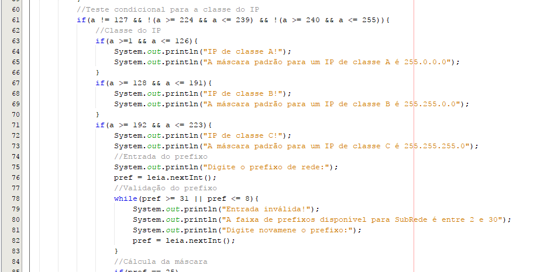
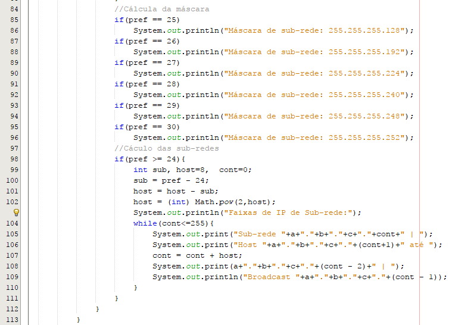
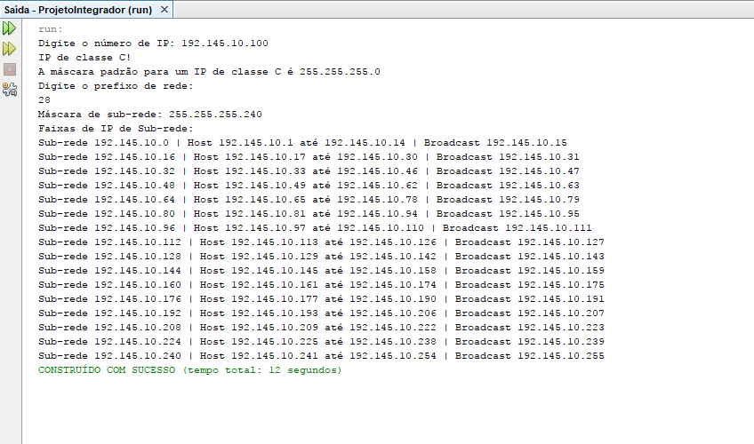

Programação
A proposta feita pela banca é de criar um algoritmo que leia um número de IP e prefixo de rede e, a partir destas informações definir a classe da rede, caso a rede fosse de classe C criar um intervalo de sub-redes. A linguagem de código foi criada no netbeans.

A princípio foi declarado as variáveis (linha 6 e 7) que seriam utilizadas. Int para variáveis do tipo inteiro e String para variáveis com um conjuto de caracteres, basicamente... uma palavra (o null representa que a variável está vazia). Em seguida solicitamos ao usuário digitar o número de IP que foi armazenado na variável “nip”.
O próximo passo foi digitar o comando String[] ip = nip.split(\\.”) esta linha de código criará uma variável String chamada “ip” que receberá o valor de “nip” quebrado. O método Split é usado para quebrar a string a partir de um caractere definido pelo programador, nesse caso o ponto final.
A lógica é que o usuário digite um número de IP padrão e cada octeto desse IP seja armazenado nas variáveis A, B, C e D, daí vem o ponto final como quebra de String.

Na figura acima é apresentado a validação dos dados inseridos pelo usuário, o número de IP foi quebrado em 4 variáveis, estamos validando se os dados que estão em cada variável estão dentro da faixa de IP existente (o valor máximo para um faixa de IP é 255), se o usuário digitar um valor maior será imprimida a mensagem de IP inválido (cor laranja).
A validação é usada com o comando while; uma estrutura de repetição, a tradução literal para essa linha de código é: enquanto a variável (a,b ou c) for maior ou igual a 256 entre neste laço de repetição. Até que os dados sejam inseridos de forma incorreta o programa irá exibir estas mensagens.

Em seguida entra o teste condicional para as faixas de IP validadas.
O primeiro IF (linha 61) só será executado se a variável A for diferente de 127, diferente do intervalo 224 a 239 e do intervalo 240 a 255.
Se essas condições forem verdadeiras ele vai entrar no primeiro IF (linha 63) que está dentro do IF inicial. A condição do primeiro IF: se a variável A estiver dentro do intervalo 1 até 126 ele irá digita as mensagens que estão dentro da seção do primeiro IF.
No segundo IF é usada a mesma lógica, só que intervalo de 128 até 191.
No terceiro também, mas no intervalo de 192 até 233. Se for verdadeira ela entrará com as mensagens para o usuário e irá perguntar o prefixo da rede. Após a entrada do prefixo entra a validação deste prefixo novamente utilizando a estrutura de repetição while (enquanto).

Após a validação do prefixo da sub-rede entra a seção de IF’s que estão dentro do IF da linha 71, estes são responsáveis por informar a máscara de sub-rede. O programa irá informar a máscara de sub-rede apenas dos IP’s de classe C.
A condição do primeiro IF (linha 85) é que se o prefixo da rede for igual a 25 o programa irá imprimir a máscara 255.255.255.128.
A do segundo será executada se o prefixo for igual a 26. Irá apresentar a máscara 255.255.255.192.
As condições serão verificadas até chegar ao prefixo de número 30 (linha 95).
A próxima seção do código é a responsável por informar a tabela de sub-redes tomando como base o IP e o prefixo digitados pelo usuário.
Novamente entra em um teste condicional (linha 98), sua condição é que o prefixo seja maior ou igual a 24(padrão classe C). Se esta condição for verdadeira o programa irá criar 3 variáveis do tipo inteiro. Não declaramos as variáveis no início do programa, pois se a condição não fosse verdadeira o programa iria armazenar espaços que não iriam ser utilizados na memória.
Agora entra a lógica alfa do programa, na linha 100 a variável “sub” irá receber o número do prefixo digitado pelo usuário e subtrair por 24(padrão classe C). Como a tabela será feita com sub-redes de uma rede de classe C, logo a quantidade mínima de prefixo será 24 representando 24 bits. Esta será a quantidade a ser retirada do prefixo digitado pelo usuário.
Na linha 101 a variável host armazena o valor 8, isto porque cada octeto de um IP possui 8 bits. O cálculo consiste em pegar o valor de host (8) e diminuir pela quantidade de bits que sobraram do cálculo anterior (variável sub).
Os bits que sobraram em host serão elevados ao quadrado para assim obter a quantidade de hosts máxima disponíveis nas sub-redes referente ao prefixo do usuário (linha 102). O resultado de uma potência na linguagem é sempre um valor do tipo real (double) por isso inserimos o int para converter o resultado da expressão em um valor do tipo inteiro
Na linha 104 entra uma estrutura de repetição que será executada enquanto a variável cont for menor ou igual a 255, o 255 foi usado porque ele é o máximo que um octeto pode ocupar.
Na linha 105 será imprimido ao usuário os três primeiros octetos que foram digitados pelo usuário no início em adicional a variável cont.
Na 106 novamente os 3 primeiros octetos em adição do cont + 1 no final.
Na linha 107 será feito o cálculo para que a variável cont receba o valor de host, isso é para que o programa mostre as faixas de sub-rede.
Linha 108 novamente os primeiros octetos em adição do cont – 2 no final.
Linha 109 será calculado o endereço de broadcast da rede.
Jogando o cálculo das sub-redes no teste de mesa:
Suponhamos que o usuário tenha digitado o IP: 192.145.10.50 com prefixo /27.
Na linha 98 ficará o seguinte teste:
se 27(pref) for maior o = 24 (esta condição é verdadeira, então ele entra na linha de código);
Na linha 100:
0(sub) = 27(pref) menos 24. O resultado deste cálculo é 3, logo a variável sub está armazenando 3;
linha 101:
8(host) = 8 menos 3(sub). Assim vamos chegar em 5, logo host passará a armazenar 5.
Lembrando que estamos fazendo o cálculo apenas do último octeto:
11111111.11111111.11111111.11100000
Os três 1’s em verde foi o resultado que achamos no cálculo da linha 100, já os cinco 0’s achamos no cálculo da linha 101.
Na linha 102:
Elevamos 2 ao valor de host(5), chegando no resultado 32;
Na linha 105:
Será imprimido o IP da rede: 192.145.10.0 (o último 0 é o valor de cont na primeira leitura;
Na linha 106:
Será imprimido o primeiro IP disponível da rede: 192.145.10.1 (cont estava com zero e foi adicionado +1);
Na linha 107:
A variável cont que no momento vale 0 receberá o valor de host que é 32, assim a variável cont ficará com 32;
Na linha 108:
Será imprimido o último IP disponível da rede: 192.145.10.30 (cont (32) menos 2 fica 30);
Na linha 109:
Será imprimido o endereço de broadcast: 192.145.10.31 (cont(32) menos 1 fica 31);
Como esses códigos estão dentro de um estrutura de repetição isso vai se repetir até que a variável cont atinja o valor de 255.

Por último vem a negação da condição imposta na linha 61, ou seja, se a condição da linha 61 for falsa ele será ignorada e entrará na negação da linha 114.
Dentro do senão (else) temos mais 3 condições referente as faixas de IP’s especiais. Como nos anteriores ele irá verificar se a condição da variável “a” é verdadeira, caso seje ele entra na condição favorável.
Ao executarmos o código e digitar os valores...
